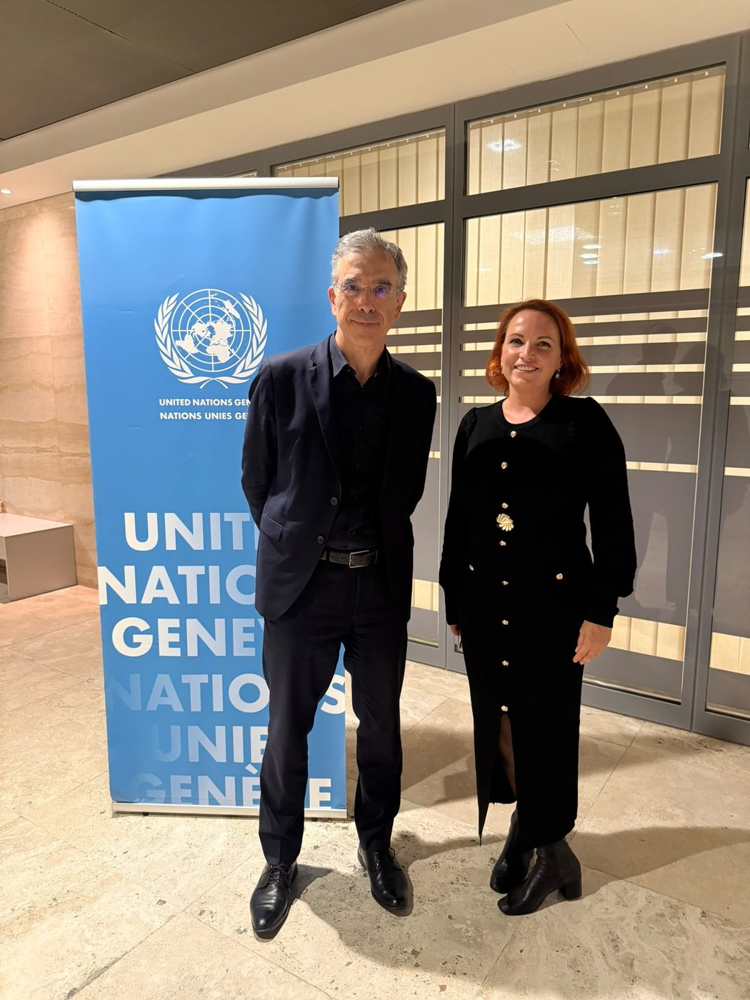
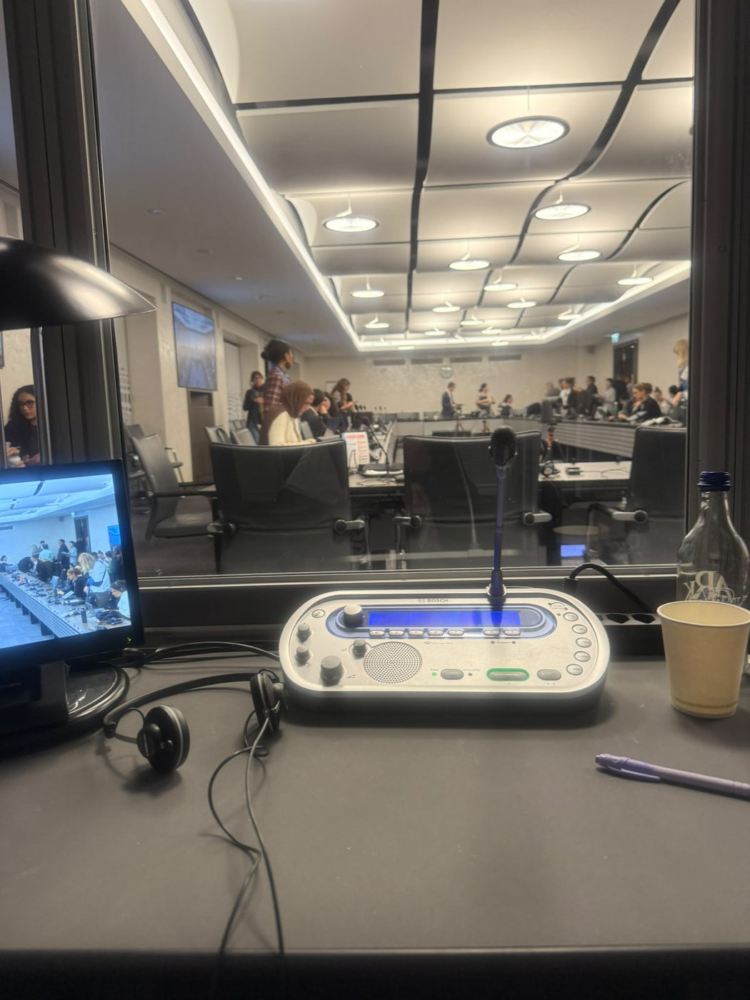
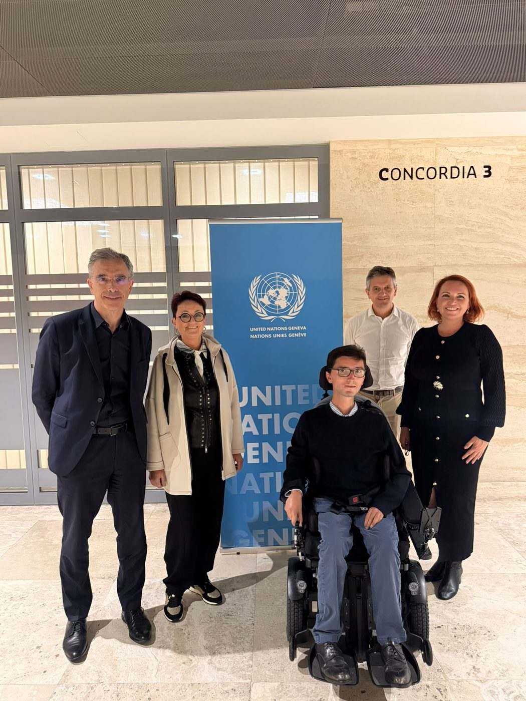

Inside the room: interpreting at the United Nations

In October 2026 I worked as a French–English interpreter at a side-event at the United Nations in Geneva, during proceedings dealing with assisted-dying legislation and the rights of persons with disabilities.
It is some of the most demanding work an interpreter can take on. These are not debates where a loose paraphrase will do. A single term carries legal weight: aide à mourir is not simply "euthanasia," personne de confiance has no clean English equivalent, and the distinction between supported and substitute decision-making can change the meaning of an entire intervention. Getting it right means knowing the subject as well as the language — the law, the medical framework, and the human-rights conventions underneath it.

What stays with me is the responsibility. When someone speaks about the most difficult moments of their life before an international committee, their words have to arrive in the other language with the same precision and the same dignity they were given. That is the whole job: not to add, not to soften, not to take a side — to let each speaker be heard exactly as they meant to be.

There is a practical reason organisations seek out interpreters like me for this work. Delegations attending the UN cannot simply rely on the in-house interpreting service — for side-events and many sessions, they bring their own. That makes the choice of interpreter their own responsibility, and in subjects this sensitive, experience and subject-matter command matter more than anything.
I work directly with the organisations I interpret for, across human-rights, legal and medical settings, in French and English. For larger assignments I work alongside a small network of trusted specialist colleagues, so capacity is never the limit.
Preparing a session, a side-event, or documents that need to carry that level of accuracy?
Email hello@rebecca-mars.com or call / WhatsApp +33 7 88 15 70 64